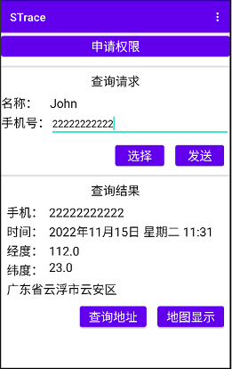
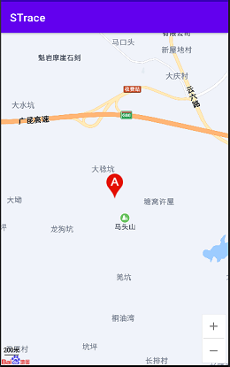
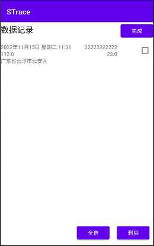
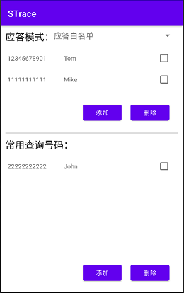

<html>
<header>
<title>赵志崑的网站—软件作品—STrace</title>
<meta http-equiv="Content-Type" content="text/html; charset=utf-8" />
<link rel="stylesheet" type="text/css" href="css/mystyle.css" />
</header>

<body>

<h1>STrace</h1>
<p>作者：<a href="https://zhaozk2000.github.io">赵志崑</a></p>
<p>STrace是一款通过短信查询和发送位置信息的应用，适用安卓8.0或更高版本。主要功能包括：</p>
<ul type="square">
<li>应答其他手机的位置查询短信，可以设置应答哪些手机号码的查询；</li>
<li>向其他手机发送位置查询短信；</li>
<li>记录查询到的位置信息，可以显示到地图上。</li>
</ul>

<p>主要界面</p>
<div >




</div>

<a class="round_button green" href="app_strace/STrace1.0.apk">完整版下载</a>（内置地图，45M大小）

<a class="round_button green" href="app_strace/STraceMicro1.0.apk">微小版下载</a>（使用第三方地图应用，4M大小）

<div>
<p>手机扫描下面的二维码打开本页面</p>

</div>

</body>
</html>